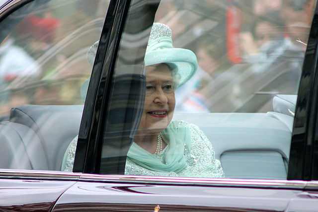

Queen Elizabeth, the Queen of England may just be one of the most attractive women in England.
Many of you might be asking yourself what makes her so desireable. Well today your going to find out! There are imesurable things that make her beautiful. Here are just a few things we will be discussing today that make her beautiful:
There are many more things but these are the ones we will discuss today. Let's get into it!
Her HairOne of the many things that make Queen Elizabeth beautiful is her hair. Her lucious, smoth, streight white hair. She needs to get it cut by a specific person for it to look nice. She gets her haircuts twice a week. Click the heading to find out more!
Another thing that makes The queen so desireable is her crown. She usually chooses not to wear it though, Click the heading to find out why!
Her StyleThe Queen always has a beautiful outfit for almost every occasion. Click the heading to learn how she gets them!
Image Infromation: Carfax2 - Wikkimedia Commons - CC - Attribution - Share alike